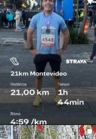

Cuidar da sua nutrição não é sobre restrição, é sobre ciência e equilíbrio.
Com o Dr. Humberto Nicastro, você recebe uma abordagem clínica personalizada que respeita sua rotina, sua fisiologia e seus objetivos, sem modismos e com total rigor científico.
Dr. Humberto Nicastro
Nutricionista Esportivo & Clínico • CRN-3
Por que essa consulta é diferente de tudo que você já tentou?
Esqueça dietas engessadas ou suplementação genérica. Cada orientação é desenhada a partir do seu metabolismo real, exames laboratoriais e rotina de vida.
Falar com a Concierge no WhatsAppAtendimento Aprofundado (60 Minutos)
Tempo dedicado para escutar sua história, rotina de treinos, histórico de exames, digestão e preferências alimentares.
Bioimpedância & Avaliação Corporal Precisa
Análise detalhada de massa muscular, gordura corporal e hidratação celular para guiar metas realistas e sustentáveis.
Prescrição e Suplementação Baseada em Evidências
Estratégia nutricional e suplementação com dosagens e horários exatos para performance, recuperação e saúde de longo prazo.
Acompanhamento e Suporte no App Webdiet
Acesso ao seu plano na palma da mão e canal aberto com nutricionista assistente para tirar dúvidas e realizar ajustes.
Serviços & Ecossistema
Escolha a modalidade que melhor se adapta aos seus objetivos.
Consulta Nutricional
Atendimento individualizado presencial em São Paulo (Ibirapuera ou Itaim Bibi) ou no formato Online.
- 60 min de anamnese aprofundada
- Bioimpedância e antropometria
- Plano personalizado no app Webdiet
- Suporte com equipe assistente
Curso de Suplementação
Curso online completo para nutricionistas e estudantes sobre metabolismo proteico e aminoácidos na prática clínica.
- Fisiologia do metabolismo proteico
- Evidências de creatina e aminoácidos
- Acesso na plataforma Hotmart
- Certificado oficial de conclusão
Fellowship CareClub
Programa oficial de aperfeiçoamento profissional em nutrição esportiva e medicina do estilo de vida na CareClub.
- Prática clínica com casos reais
- Mentoria direta do Dr. Nicastro
- Networking de alta autoridade
- Imersão no ecossistema CareClub
Dr. Humberto Nicastro
Nutricionista graduado pelo Centro Universitário São Camilo e Doutor (PhD) em Ciências pela Universidade de São Paulo (USP), com foco em fisiologia e metabolismo energético aplicados ao exercício.
Atualmente é Coordenador do Departamento de Nutrição da CareClub (unidades São Paulo), além de Consultor Científico da Performance Science Nutrition e professor de cursos de pós-graduação por todo o país.
Especialista em Nutrição de Precisão (Genômica Nutricional) e Fisiologia do Exercício, sua conduta clínica une a mais avançada literatura científica internacional ao acolhimento e compreensão da realidade do paciente.
Alta Performance na Prática
Condução nutricional de quem compete no mais alto nível esportivo.
Thiago Pereira & Felipe França
Atendimento a medalhistas olímpicos e campeões mundiais de natação, aplicando o máximo rigor metabólico.

Nutricionista & Praticante
Maratonista e praticante de endurance (21km Montevideo), testando e vivenciando a suplementação na pele.
Webinars & Conteúdo Científico Aberto
Aulas completas e aprofundadas com o Dr. Nicastro no canal da Performance Science Nutrition sobre modulação de saciedade e carboidratos.
Perguntas Comuns
Como é o formato da primeira consulta?
A primeira consulta dura cerca de 60 minutos, com anamnese aprofundada, análise de rotina e exames, além de avaliação física completa (bioimpedância e medidas) no presencial.
Como funciona a consulta online?
A consulta online é realizada por videoconferência com o mesmo tempo e rigor técnico. O plano alimentar e suplementação são entregues diretamente no aplicativo Webdiet.
O Dr. Nicastro atende convênios?
Os atendimentos são particulares. Emitimos nota fiscal detalhada para que você possa solicitar o reembolso junto ao seu convênio de saúde.
Onde ficam os consultórios em São Paulo?
O Dr. Nicastro atende nas unidades da CareClub no Ibirapuera e no Itaim Bibi, centros de excelência médica na capital paulista.
Agende sua consulta com quem é referência em nutrição no país.
Entre em contato com nossa concierge para verificar os horários disponíveis em São Paulo ou para atendimento Online.
Falar no WhatsApp (Concierge Ana)